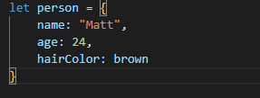
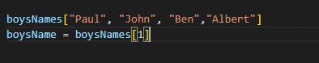

Technical Blog - Sprint 3 - Introductory Javascript
What is Javascript??
Javascript is a programming language that allows programmers to create and manipulate the functionality of a webpage. Think of HTML as the skeleton of the human body.
It provides the blueprint for our document at its most basic form. CSS is a styling language. Liken CSS to our observable features, such as our hair style, hair color
and eye color. Javascript is what gives us functionality, think of it as our skeleton's ability to breathe, run and talk. This is how you can look at these three languages
when building and designing web pages.
Control Flow & Loops
Your computer naturally reads Javascript code top to bottom as you would read a book. Control flow is how we manipulate the order in which this code is read. There are
a few ways we can do this. One method is by using loops. Loops are a type of conditional statement that generally run while a condition is true and stop when the condition
returns false. The condition outcome is generally determined by an iterator value, which changes with each iteration of the loop. An real life example of control flow and loops
in action are seen when at the self-checkout of a grocery store.
Step 1:You scan an item through the register. Move to Step 2
Step 2: Do you have another item??
If yes, repeat Step 1
If No, move to Step 3
Step 3: Pay, collect items and leave Self Checkout
What is the DOM
The DOM or Document Object Model, is a structured representation of an HTML document. In practice, it can be traced as a tree with levels cascading down. The tree
begins from a single node, which is generally the document itself, and then links to the html root element node. This then branches off into other elements making
up the html doc, such as the head and body elements, which then branches again. Let's look at the body element as an example; its parent element is the root
element (html), its sibling element is the head element and it has several child elements based on the contents of the document such as p element, h elements etc.
This representation is object-oriented, which means all the nodes are viewed as objects which can be manipulated using Javascript isolate and target specific
elements for change.
Difference between Accessing Data from Arrays and Objects
Objects and Arrays are both special forms of data collection. An object variable generally has associated properties to go with it.
Lets say we have a person object. Properties would include name, age, hair color etc. Let's look at the below example:

Here we see the object is person with 3 properties assigned to it. Let's look at a different example of an array in VS Code:

Here we see the array for boys names. At first glance, we can already see these are very different. The array has much more closely linked elements while the object
can have various properties with no link outside of the object. To access an object property, we use '.' notation to access the key property we desire. In the example
above, person.age returns the age property which is 24. In arrays we use the index notation to pick out the element we need. Indexes start at zero, therefore in the array
example, if we wanted to pull the first name in the array we would write boysNames[0].
Functions are AMAZING!!
A function is a block of code designed to perform specific tasks in the program. Functions are particularly useful as it saves the programmer from rewriting
many lines of code as functions only need to be written once, and then they can be invoked ('called') as many times as the program needs the function to run.